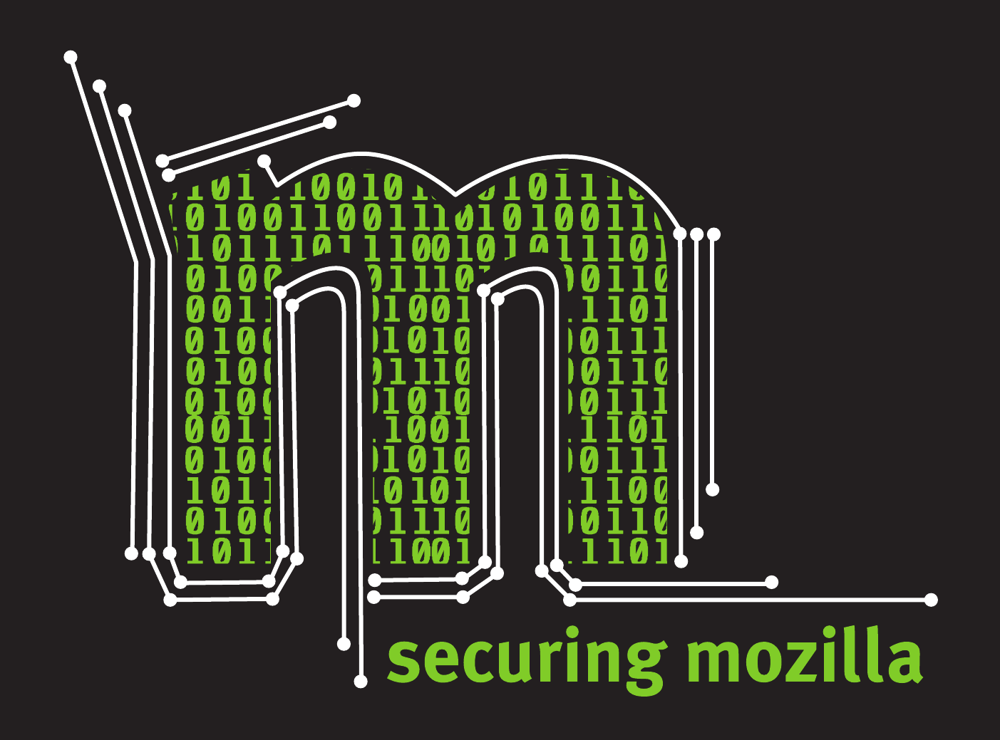

SSL/TLS for the pragmatic
by Julien Vehent / @jvehent
$whois opsec@mozilla.com
OpSec assists Mozillians in defining and operating security controls to ensure that data at Mozilla is protected consistently across the organization.
Why?
- We want HTTPS Everywhere
- Bad HTTPS can hurt visitors:
- Ciphers that provide no security
- Ciphers that are so slow people leave
- Certificates that display errors in clients
- Configurations that block legitimate clients
We want GOOD HTTPS Everywhere!
Looking for TLS guidance?

Server Side TLS
Bad SSL/TLS default settings. Good conf takes time.
Mozilla guidelines: Server Side TLS
Cipherscan
$ ./cipherscan mozilla.org
prio ciphersuite protocols pfs_keysize
1 DHE-RSA-AES128-SHA SSLv3,TLSv1,TLSv1.1,TLSv1.2 DH,1024bits
2 DHE-RSA-AES256-SHA SSLv3,TLSv1,TLSv1.1,TLSv1.2 DH,1024bits
3 AES128-SHA SSLv3,TLSv1,TLSv1.1,TLSv1.2
4 AES256-SHA SSLv3,TLSv1,TLSv1.1,TLSv1.2
5 DES-CBC3-SHA SSLv3,TLSv1,TLSv1.1,TLSv1.2
Certificate: trusted, 2048 bit, sha1WithRSAEncryption signature
TLS ticket lifetime hint: None
OCSP stapling: supported
Server side cipher ordering
A bit of history...
1969: ARPAnet

We are all Gentlemen
... and we wear bow ties!
A network
with no security
- Strange and unrealistic in a cold war context, for a network designed to withstand nuclear attacks
- Security of communications was always a critical concern. First computers were built by code breaker (bletchley park, alan turing, enigma).
OSI model lacks a SECURITY layer
+---------------------+
| APPLICATION |7
+---------------------+
| PRESENTATION |6
+---------------------+
| SESSION |5
+---------------------+
| TRANSPORT |4
+---------------------+
| NETWORK |3
+---------------------+
| DATA LINK |2
+---------------------+
| PHYSICAL |1
+---------------------+
1994: Netscape creates SSL
The primary goal of the SSL protocol is to provide privacy and
reliability between two communicating applications.
- Privacy (encryption)
- Identity (authentication)
- Integrity (message authentication/checksum)
Very very smart cryptographers and developers!
Not exactly socket layer, nor transport layer
+---------------------+
| APPLICATION |7
+---------------------+
| PRESENTATION |6
+---------------------+ +----------------------+
| SESSION |5 |SSL Handshake Protocol|
+---------------------+ <============={+----------------------+
| TRANSPORT |4 |SSL Record Protocol |
+---------------------+ +----------------------+
| NETWORK |3
+---------------------+
| DATA LINK |2
+---------------------+
| PHYSICAL |1
+---------------------+
A complex connection
establishment procedure
+----------------+ +----------------+ | |- CLIENT HELLO- - - - - - - - - - ->|1 | | |<- - - - - - - - - - - SERVER HELLO |2 | | |<- - - - - - - - - - - CERTIFICATE -|3 | | C |<- - - - - - - CERTIFICATE REQUEST -|4 | | L |<- - - - - - - SERVER KEY EXCHANGE -|5 S | | I |<- - - - - - - - SERVER HELLO DONE -|6 E | | E |- CERTIFICATE - - - - - - - - - - ->|7 R | | N |- CLIENT KEY EXCHANGE - - - - - - ->|8 V | | T |- CERTIFICATE VERIFY- - - - - - - ->|9 E | | |- CHANGE CIPHER SPEC- - - - - - - ->|10 R | | |- CLIENT FINISHED - - - - - - - - ->|11 | | |<- - - - - - - --CHANGE CIPHER SPEC-|12 | | |<- - - - - - - - - SERVER FINISHED -|13 | | |<- - - - - ENCRYPTED DATA - - - - ->|14 | +----------------+ +----------------+
Tons of extra features
- Perfect Forward Secrecy
- Session resumption
- Compression
- Ciphersuite ordering client/server side
- dozens of extensions: SNI, OCSP stapling, NPN, elliptic curves selection, renegociation, ...
... and I'm not getting anywhere close certificates and the CA model!
...and an equal number of problems
- Immensely difficult to implement in a fast and secure way
- Attack surface is huge: cryptanalysis, message padding, timing attacks, implementation bugs, (re)negociation, downgrade, ...
- Billions of eCommerce dollars rely on it: huge pressure to fix bugs, no time to redesign.
- Improving TLS often translates into adding more complexity. More extensions, more ciphers, more edge cases, ... TLS is not getting simpler any time soon!
We must use SSL/TLS. And we must do it right.
Doing TLS right
The story of Cipherscan
and Server Side TLS
Starring:
- Ciphersuites ordering
- Perfect Forward Secrecy and Diffie-Hellman
- AES, in cpu, in software, with GCM or CBC
- OCSP Stapling
- Session resumption, performance vs security
Ciphersuite ordering
By default, a server will use the first cipher a client proposes
(if it supports it).
Clients can be opinionated, most browsers are.
This is called "client side ordering".
Client side ordering
$ ./cipherscan example.net
prio ciphersuite protocols pfs_keysize
1 DHE-RSA-AES256-SHA SSLv3,TLSv1 DH,1024bits
2 AES256-SHA SSLv3,TLSv1
3 DHE-RSA-AES128-SHA SSLv3,TLSv1 DH,1024bits
4 AES128-SHA SSLv3,TLSv1
5 RC4-SHA SSLv3,TLSv1
6 RC4-MD5 SSLv3,TLSv1
Certificate: UNTRUSTED, 2048 bit, sha1WithRSAEncryption signature
TLS ticket lifetime hint: None
OCSP stapling: not supported
Client side cipher ordering
Client side ordering
server uses whichever cipher the client presents first
$ openssl s_client -connect example.net:443 -cipher 'AES256-SHA:RC4-SHA'
[...]
SSL-Session:
Protocol : TLSv1
Cipher : AES256-SHA
$ openssl s_client -connect example.net:443 -cipher 'RC4-SHA:AES256-SHA'
[...]
SSL-Session:
Protocol : TLSv1
Cipher : RC4-SHA
Server side ordering
selection is enforced by the server
$ openssl s_client -connect google.com:443 -cipher 'AES128-SHA:RC4-SHA'
[...]
SSL-Session:
Protocol : TLSv1.2
Cipher : AES128-SHA
$ openssl s_client -connect google.com:443 -cipher 'RC4-SHA:AES128-SHA'
[...]
SSL-Session:
Protocol : TLSv1.2
Cipher : AES128-SHA
Server side ordering
RFC 5246 (TLS 1.2), section 7.4.1.2. Client Hello
The cipher suite list, passed from the client to the server in the
ClientHello message, contains the combinations of cryptographic
algorithms supported by the client in order of the client's
preference (favorite choice first). Each cipher suite defines a key
exchange algorithm, a bulk encryption algorithm (including secret key
length), a MAC algorithm, and a PRF. The server will select a cipher
suite or, if no acceptable choices are presented, return a handshake
failure alert and close the connection. If the list contains cipher
suites the server does not recognize, support, or wish to use, the
server MUST ignore those cipher suites, and process the remaining
ones as usual.
In Web Servers
Nginx
ssl_prefer_server_ciphers on;
Apache
SSLHonorCipherOrder on
AWS ELB
{
"Policies":[
{
{
"Name":"Server-Defined-Cipher-Order",
"Value":true
}
}
]
}
Ciphersuite ordering
is complex
1) security 2) performance 3) compatibility
- Prefer Perfect Forward Secrecy
- Prefer modern ciphers: ECDHE, AES-GCM
- Maintain compatibility: AES-SHA, 3DES
- Discard insecure protocols: RC4, MD5, SSlv2, SSLv3 (maybe)
Use this
ECDHE-RSA-AES128-GCM-SHA256:ECDHE-ECDSA-AES128-GCM-SHA256:ECDHE-RSA-AES256-GCM-SHA384
:ECDHE-ECDSA-AES256-GCM-SHA384:DHE-RSA-AES128-GCM-SHA256:DHE-DSS-AES128-GCM-SHA256:
kEDH+AESGCM:ECDHE-RSA-AES128-SHA256:ECDHE-ECDSA-AES128-SHA256:ECDHE-RSA-AES128-SHA:
ECDHE-ECDSA-AES128-SHA:ECDHE-RSA-AES256-SHA384:ECDHE-ECDSA-AES256-SHA384:
ECDHE-RSA-AES256-SHA:ECDHE-ECDSA-AES256-SHA:DHE-RSA-AES128-SHA256:DHE-RSA-AES128-SHA:
DHE-DSS-AES128-SHA256:DHE-RSA-AES256-SHA256:DHE-DSS-AES256-SHA:DHE-RSA-AES256-SHA:
AES128-GCM-SHA256:AES256-GCM-SHA384:AES128-SHA256:AES256-SHA256:AES128-SHA:AES256-SHA
:AES:CAMELLIA:DES-CBC3-SHA:!aNULL:!eNULL:!EXPORT:!DES:!RC4:!MD5:!PSK:!aECDH:
!EDH-DSS-DES-CBC3-SHA:!EDH-RSA-DES-CBC3-SHA:!KRB5-DES-CBC3-SHA
It's long, but finely tuned for performance and security.
Copy from https://wiki.mozilla.org/Security/Server_Side_TLS
$ ./cipherscan jve.linuxwall.info
prio ciphersuite protocols pfs_keysize
1 ECDHE-RSA-AES128-GCM-SHA256 TLSv1.2 ECDH,P-256,256bits
2 ECDHE-RSA-AES256-GCM-SHA384 TLSv1.2 ECDH,P-256,256bits
3 DHE-RSA-AES128-GCM-SHA256 TLSv1.2 DH,2048bits
4 DHE-RSA-AES256-GCM-SHA384 TLSv1.2 DH,2048bits
5 ECDHE-RSA-AES128-SHA256 TLSv1.2 ECDH,P-256,256bits
6 ECDHE-RSA-AES128-SHA TLSv1,TLSv1.1,TLSv1.2 ECDH,P-256,256bits
7 ECDHE-RSA-AES256-SHA384 TLSv1.2 ECDH,P-256,256bits
8 ECDHE-RSA-AES256-SHA TLSv1,TLSv1.1,TLSv1.2 ECDH,P-256,256bits
9 DHE-RSA-AES128-SHA256 TLSv1.2 DH,2048bits
10 DHE-RSA-AES128-SHA TLSv1,TLSv1.1,TLSv1.2 DH,2048bits
11 DHE-RSA-AES256-SHA256 TLSv1.2 DH,2048bits
12 DHE-RSA-AES256-SHA TLSv1,TLSv1.1,TLSv1.2 DH,2048bits
13 AES128-GCM-SHA256 TLSv1.2
14 AES256-GCM-SHA384 TLSv1.2
15 AES128-SHA256 TLSv1.2
16 AES256-SHA256 TLSv1.2
17 AES128-SHA TLSv1,TLSv1.1,TLSv1.2
18 AES256-SHA TLSv1,TLSv1.1,TLSv1.2
19 DHE-RSA-CAMELLIA256-SHA TLSv1,TLSv1.1,TLSv1.2 DH,2048bits
20 CAMELLIA256-SHA TLSv1,TLSv1.1,TLSv1.2
21 DHE-RSA-CAMELLIA128-SHA TLSv1,TLSv1.1,TLSv1.2 DH,2048bits
22 CAMELLIA128-SHA TLSv1,TLSv1.1,TLSv1.2
23 DES-CBC3-SHA TLSv1,TLSv1.1,TLSv1.2
Certificate: trusted, 2048 bit, sha256WithRSAEncryption signature
TLS ticket lifetime hint: 300
OCSP stapling: supported
Server side cipher ordering
Doing TLS right
Ciphersuites ordering- Perfect Forward Secrecy and Diffie-Hellman
- AES, in cpu, in software, with GCM or CBC
- OCSP Stapling
- Session resumption, performance vs security
PFS and Diffie-Hellman
TLS security model without PFS
- Client starts a TLS handshake
- Client encrypts a session secret with the server's public key
- Server decrypts the session secret
- Client and server encrypt data with the session secret
Problem: one private key decrypts all session secrets, and thus all data, from past and future connections.
PFS and Diffie-Hellman
TLS security model with PFS
- Client starts a TLS handshake
- Server picks DHE or ECDHE, sends the necessary elements
- Client and Server agree on an ephemeral session key
- Server's private key cannot decrypt the session key
Diffie-Hellman
Server picks a prime p=23, a generator g=5 and a secret a=6
Server calculates A = g^a mod p = 5^6 mod 23 = 8
Server sends p, g and A to Client ---->
Client picks a secret b=15
Client calculates B = g^b mod p = 5^15 mod 23 = 19
<---- Client sends B to Server
Server calculates session secret s = B^a mod p = 19^6 mod 23 = 2
Client calculates session secret s = A^b mod p = 8^15 mod 23 = 2
~ Server and Client both use session secret s = 2 ~
The session secret "s" is never sent over the wire and is specific to one session.
PFS ciphers: DHE & ECDHE
$ ./cipherscan accounts.firefox.com
prio ciphersuite protocols pfs_keysize
1 ECDHE-RSA-AES128-GCM-SHA256 TLSv1.2 ECDH,P-256,256bits
2 ECDHE-RSA-AES128-SHA256 TLSv1.2 ECDH,P-256,256bits
3 ECDHE-RSA-AES128-SHA TLSv1,TLSv1.1,TLSv1.2 ECDH,P-256,256bits
4 DHE-RSA-AES128-SHA TLSv1,TLSv1.1,TLSv1.2 DH,1024bits
[...]
Doing TLS right
Ciphersuites orderingPerfect Forward Secrecy and Diffie-Hellman- AES, in cpu, in software, with GCM or CBC
- OCSP Stapling
- Session resumption, performance vs security
Advanced Encryption Standard
Two modes:
- CBC: standard, but vulnerable to many attacks.
AES128-SHA, DHE-RSA-AES128-SHA, ECDHE-RSA-AES128-SHA,... - GCM: safer and faster, but rarely implemented yet
AES128-GCM-SHA256, DHE-RSA-AES128-GCM-SHA256, ECDHE-RSA-AES128-GCM-SHA256, ...
Use AES-NI when available!
type 8192 bytes
----------------+-----------
aes-128-gcm 1218628.27k
aes-128-cbc 624443.39k
camellia-128-cbc 160815.26k